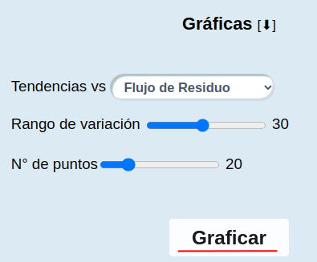

Fire heater natural draft simulator
Scope, uses and limitations.
Algorithm
As it is conceived, the algorithm of this simulator, elaborated on the basis of a cabin-type natural draft furnace, which originally processes an atmospheric residue and whose heat absorbed in normal operating conditions is 20.9 MW (71.5 MMBtu/h), is capable of performing calculations over a wide range of process conditions.
Its versatility is such that if the required properties are introduced, it is also capable of "processing" crude oils, other residues, heating oils, and other non-vaporizing liquid loads. However, by including changes in some variables without considering the operational and/or mechanical limitations of the furnace, the results may not make real sense.
Heater
Operating conditions
- Design: 23.0 MW (78.79 MMBtu/h) - Maximum processing capacity.
- Normal: 20.9 MW (71.5 MMBtu/h) [90.75% of Design] - Normal furnace operation.
- Turndown: 10.45 MW (35.77 MBtu/h) [45.4% of Design] - Minimum capacity condition. It is not equivalent to a burner turndown condition since it could be achieved with a number of burners operating normally and other burners simply off.
Specific Gravity @ 60°F (15.6°C) [0.84] - This specific gravity is for an atmospheric residue. If this data is changed, the nature of the process fluid will be modified, which is unusual from an operational perspective.
Interface
When entering the DATA section you can edit the process variables to access the detailed calculation of all the variables considered by the simulator and also for the elaboration of a series of graphs with the trends of the most important operational variables.
To edit the fuel, you must press the "edit" option found on both data entry screens:

Fuel is defined from the molar composition of its individual components. The sum of these components must equal 100%.
To access the Graphs screen and edit the comparison variable, you must press the "variables" option on the +DATA entry screen:
After editing the options, the graph view is accessed by pressing "Graph"
